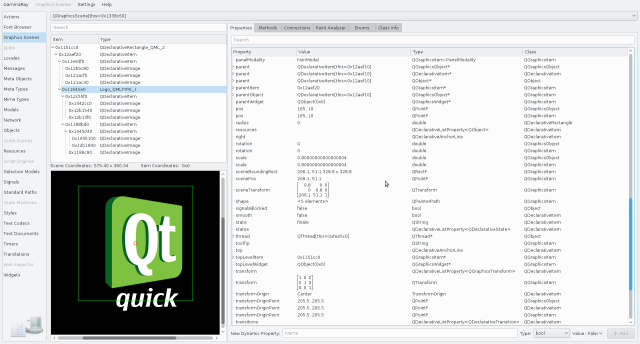
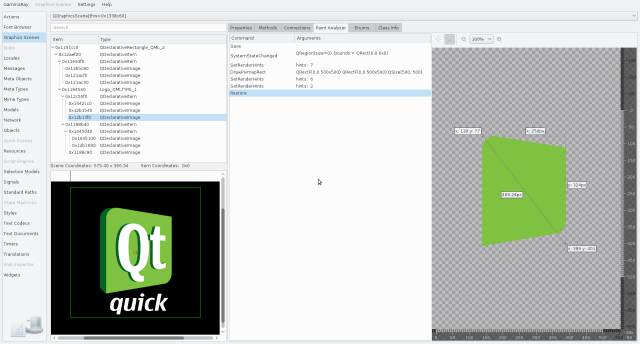

The graphcis scene inspector allows you to inspect the structure of a QGraphicsScene, and to view and edit the properties of the QGraphicsItem instances contained in it. It enables:
If your target has multiple QGraphicsScene instances, the combo box at the top can be used to switch between them.
The item tree is shown to the top left, and contains the visual hierarchy of QGraphicsItem instances in the currently selected graphics scene. The right side contains the Object Inspection view for the selected item.

You can navigate to the object browser (and other applicable tools) using the context menu on the item tree. This feature is available for QGraphicsObject sub-classes only.
The remote view is shown to the lower left of graphics view inspector. Besides giving you a zoomable view of the rendered content, it provides a number of additional features:
When selecting a graphics item in the item tree, the Paint Analyzer tab is activated in the property view on the right.

The paint analyzer allows you to inspect every single QPainter command that is executed, and look at the visual result after each step.